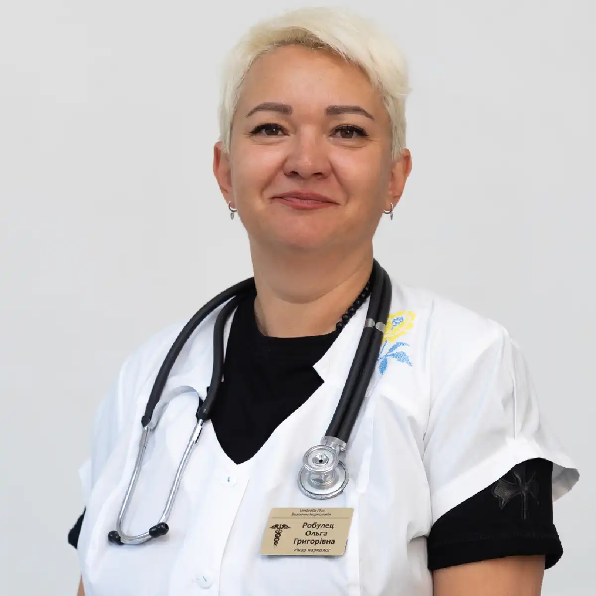

+38(068) 79 72 782
+38(068) 79 72 782Кодування від алкоголізму уколом дисульфірам Чорноморськ
Надійний захист від зривів


Безкоштовна консультація, працюємо цілодобово 24/7
Надійний захист від зривів

Дата написання: Оновлюється...
Останнє оновлення: Оновлюється...
Кодування від алкоголізму уколом дисульфіраму в Чорноморську — це сучасний та ефективний медичний метод, спрямований на формування стійкої відмови від вживання спиртних напоїв. Препарат впливає на обмінні процеси в організмі, блокуючи переробку алкоголю та викликаючи виражену негативну реакцію при його вживанні. Завдяки цьому формується стійкий зв’язок між алкоголем і погіршенням самопочуття, що допомагає пацієнту контролювати свою поведінку та знижує ризик зривів.
Цей метод використовується в межах комплексного лікування алкогольної залежності та є одним із найбільш результативних способів закріплення тверезості. Кодування дозволяє створити додатковий фізіологічний бар’єр, який підтримує пацієнта на етапі відмови від алкоголю та допомагає утримуватися від повторного вживання. Якщо перед процедурою людина перебуває в запої, відчуває виражену слабкість, тремор або сильну інтоксикацію, спочатку може знадобитися швидка наркологічна допомога для стабілізації стану.
Процедура проводиться тільки після консультації лікаря-нарколога, який оцінює стан пацієнта, виявляє можливі протипоказання та підбирає оптимальну схему лікування. У деяких випадках перед кодуванням рекомендується детоксикація, крапельниця або термінове виведення із запою , щоб підготувати організм до подальшого лікування та знизити ризик ускладнень.
Кодування уколом дисульфіраму — це медикаментозний метод лікування алкогольної залежності, при якому в організм пацієнта вводиться препарат, що блокує нормальну переробку етанолу. В основі методу лежить формування стійкої фізіологічної реакції, за якої навіть невелика кількість алкоголю викликає різке погіршення самопочуття. Такий підхід допомагає створити потужний стримувальний фактор і знизити ймовірність вживання спиртного.
Препарат впливає на ферментну систему печінки, порушуючи процес розщеплення алкоголю. У результаті відбувається накопичення токсичних продуктів розпаду, які чинять виражений негативний вплив на організм. Це супроводжується неприємними відчуттями, що формує стійку асоціацію між алкоголем і погіршенням стану.
З часом у пацієнта закріплюється захисний рефлекс: вживання спиртного починає сприйматися як джерело небезпеки та дискомфорту. Такий механізм сприяє усвідомленій відмові від алкоголю та допомагає утримуватися від зривів, особливо в поєднанні з психологічною підтримкою та спостереженням спеціаліста. Саме тому лікування алкогольної залежності в Одесі або Чорноморську має розглядатися комплексно: кодування допомагає закріпити тверезість, а подальша терапія працює з причинами залежності.
Після введення препарату пацієнт, як правило, не відчуває вираженого дискомфорту за умови суворого дотримання всіх рекомендацій лікаря та правильної підготовки до процедури. У більшості випадків сам укол переноситься спокійно, а виражені негативні відчуття відсутні. Однак у перші години або дні після введення можуть спостерігатися легкі реакції організму, такі як помірна слабкість, сонливість, зниження працездатності, легке запаморочення або загальне відчуття втоми. Ці прояви є природною реакцією організму на введення препарату та його вплив на обмінні процеси.
Іноді пацієнти можуть відзначати незначне відчуття тривожності або дискомфорту, пов’язане радше з психологічним фактором — усвідомленням проведеного кодування. Важливо розуміти, що такі стани мають тимчасовий характер і минають у міру адаптації організму. Протягом короткого періоду стан стабілізується, і людина повертається до звичного рівня активності та самопочуття.
Процес адаптації проходить індивідуально і залежить від загального стану здоров’я, наявності хронічних захворювань, а також особливостей нервової системи пацієнта. У цей період рекомендується дотримуватися щадного режиму: уникати надмірних фізичних та емоційних навантажень, повноцінно відпочивати, дотримуватися режиму сну й харчування. Це дозволяє організму швидше адаптуватися до дії препарату та знизити ймовірність будь-яких дискомфортних відчуттів.
Особливу увагу необхідно приділити суворому дотриманню рекомендацій лікаря. Ключовою умовою безпеки є повна відмова від вживання алкоголю. Навіть мінімальна кількість спиртного може викликати виражену реакцію організму, пов’язану з механізмом дії дисульфіраму. Також важливо уникати продуктів і лікарських засобів, що містять етанол. Якщо до кодування зберігаються симптоми похмілля, слабкість, нудота або ознаки токсичного навантаження, лікар може рекомендувати крапельницю при інтоксикації алкоголем для безпечної підготовки організму до процедури.
При вживанні алкоголю після введення дисульфіраму виникає виражена й часто інтенсивна реакція організму, пов’язана з порушенням нормального процесу переробки етанолу. Під дією препарату блокуються ферменти печінки, які відповідають за розщеплення алкоголю, унаслідок чого в крові швидко накопичуються токсичні продукти його розпаду. Це призводить до різкого погіршення самопочуття навіть при мінімальній кількості спиртного.
У пацієнта можуть з’явитися сильна нудота, почервоніння шкіри, відчуття жару, виражена слабкість, запаморочення, прискорене серцебиття, тривожність і відчуття внутрішнього дискомфорту. Нерідко спостерігаються перепади артеріального тиску, задишка, відчуття нестачі повітря, а також неприємні відчуття в ділянці серця. Така реакція розвивається досить швидко й може посилюватися зі збільшенням дози алкоголю.
Важливо розуміти, що ця реакція не є випадковою — вона являє собою цілеспрямований захисний механізм, який формує стійкий негативний зв’язок між уживанням алкоголю та погіршенням стану. Завдяки цьому у пацієнта виробляється стійка відраза до спиртного, що значно знижує ризик повторного вживання.
У тяжких випадках можливі серйозні ускладнення, включно з вираженими порушеннями серцевого ритму, різкими стрибками артеріального тиску та загальним погіршенням стану, що потребує медичного втручання. Саме тому вживання алкоголю після кодування категорично заборонене. Суворе дотримання рекомендацій лікаря є ключовою умовою безпеки та ефективності лікування, а також важливим кроком на шляху до стійкої тверезості.
Тривалість дії препарату дисульфірам залежить від низки факторів, включно з обраним дозуванням, формою введення, особливостями обміну речовин і загальним станом організму пацієнта. Також важливу роль відіграє дотримання рекомендацій лікаря та індивідуальна реакція на препарат. У середньому ефект може зберігатися від кількох місяців до року й більше, забезпечуючи тривалу захисну дію від уживання алкоголю.
Протягом усього періоду дії препарату в організмі підтримується механізм, за якого вживання спиртного викликає виражену негативну реакцію. Це створює стійкий фізіологічний бар’єр, який значно знижує ймовірність зривів і допомагає пацієнту утримуватися від вживання навіть у складних ситуаціях. Поступово формується стійка асоціація між алкоголем і погіршенням самопочуття.
Окрім фізіологічного ефекту, важливу роль відіграє й психологічний аспект. Пацієнт починає усвідомлено уникати вживання спиртного, оскільки розуміє можливі наслідки. Це дозволяє закріпити результат лікування та сформувати нові поведінкові установки. Однак для досягнення довгострокового й стійкого результату однієї дії препарату недостатньо. Найбільш ефективним є комплексний підхід, що включає роботу з психологічними причинами залежності, підтримку спеціаліста та зміну способу життя. Це допомагає не лише утримуватися від алкоголю на період дії препарату, а й зберегти тверезість надалі.
Вартість кодування від алкоголізму уколом дисульфіраму в Чорноморську починається від 6000 грн.
| Популярні послуги | Ціна |
|---|---|
| Нарколог Одеса | Від 1500 грн |
| Крапельниця від алкоголю | Від 2199 грн |
| Виведення із запою вдома | Від 2199 грн |
| Кодування від алкоголізму | Від 6000 грн |
У деяких випадках справді можливе проведення процедури розкодування, однак таке рішення приймається виключно лікарем-наркологом після ретельної оцінки стану пацієнта, строку дії препарату та причин, через які розглядається необхідність скасування кодування. Спеціаліст враховує загальний стан здоров’я, наявність протипоказань, психоемоційний фон і ступінь сформованої залежності.
Самостійні спроби нейтралізувати дію дисульфіраму категорично неприпустимі та можуть становити серйозну загрозу для здоров’я. Використання «домашніх» методів або неперевірених способів може призвести до непередбачуваних наслідків, включно з порушенням роботи серцево-судинної системи, інтоксикацією та іншими ускладненнями. Дисульфірам чинить системний вплив на організм, тому будь-які втручання мають проводитися тільки під контролем спеціаліста. Розкодування виконується в медичних умовах із дотриманням усіх заходів безпеки. За необхідності лікар може призначити додаткові обстеження, щоб переконатися у відсутності ризиків.
Як і будь-який медичний препарат, дисульфірам може викликати побічні ефекти, особливо в період адаптації організму або за наявності індивідуальної чутливості до діючої речовини. У більшості випадків такі реакції мають помірний і тимчасовий характер. До найпоширеніших проявів належать загальна слабкість, запаморочення, сонливість, зниження концентрації уваги та незначне погіршення загального самопочуття. Ці симптоми, як правило, минають самостійно в міру звикання організму до препарату.
У деяких випадках можуть спостерігатися більш виражені реакції, особливо при порушенні схеми лікування, перевищенні дозування або ігноруванні рекомендацій лікаря. Особливу небезпеку становить поєднання дисульфіраму з алкоголем, оскільки в такій ситуації розвивається інтенсивна реакція організму, пов’язана з накопиченням токсичних продуктів розпаду етанолу. Це може супроводжуватися різким погіршенням самопочуття, включно з нудотою, прискореним серцебиттям, відчуттям жару, тривожністю та іншими неприємними симптомами.
Також важливо враховувати, що вираженість побічних ефектів може залежати від загального стану здоров’я пацієнта, наявності хронічних захворювань та індивідуальних особливостей обміну речовин. Саме тому перед початком лікування проводиться обов’язкова консультація лікаря-нарколога , а в процесі терапії рекомендується регулярний контроль стану. Дотримання призначень лікаря, правильне дозування та медичне спостереження дозволяють звести до мінімуму ризик небажаних наслідків і забезпечити безпечне та ефективне лікування алкогольної залежності.
Перед проведенням кодування уколом дисульфіраму пацієнту необхідно повністю відмовитися від уживання алкоголю на певний період. Тривалість утримання визначається лікарем індивідуально та залежить від стадії залежності, тривалості запою і загального стану організму. Це обов’язкова умова, оскільки наявність алкоголю в крові може призвести до небажаної реакції при введенні препарату та підвищити ризик ускладнень.
Якщо пацієнт перебуває в запої або відчуває виражені симптоми інтоксикації, перед процедурою може знадобитися анонімне виведення із запою , яке допомагає стабілізувати стан, знизити токсичне навантаження та підготувати організм до подальшого лікування. Такий формат особливо важливий для людей, які хочуть отримати допомогу конфіденційно, без зайвого стресу й розголосу.
На етапі підготовки обов’язково проводиться консультація лікаря-нарколога, під час якої спеціаліст оцінює стан пацієнта, збирає анамнез, уточнює наявність хронічних захворювань і можливих протипоказань. За необхідності можуть бути призначені додаткові обстеження, щоб виключити ризики та підібрати максимально безпечну тактику лікування.
Підготовка до процедури відіграє ключову роль в ефективності та безпеці кодування. Вона дозволяє організму відновитися після інтоксикації, стабілізувати роботу внутрішніх органів і підготуватися до дії препарату. Крім того, на цьому етапі лікар може провести роз’яснювальну бесіду, пояснити механізм дії дисульфіраму та важливість дотримання всіх рекомендацій. На основі отриманих даних спеціаліст підбирає оптимальну схему лікування, включно з дозуванням препарату та форматом введення.
Метод кодування уколом дисульфіраму рекомендується пацієнтам з алкогольною залежністю, які усвідомлюють наявність проблеми та готові до відмови від уживання спиртного. Важливою умовою ефективності є внутрішня мотивація людини та її прагнення змінити спосіб життя. Препарат не замінює бажання пацієнта одужати, а посилює контроль і допомагає утримуватися від зривів завдяки формуванню фізіологічного бар’єра.
Найчастіше цей метод застосовується при хронічному алкоголізмі, коли залежність має тривалий перебіг і супроводжується регулярними або затяжними запоями. Також він ефективний для пацієнтів, у яких раніше вже були спроби лікування, але зберігається високий ризик рецидиву. У таких випадках кодування стає додатковим захистом, що дозволяє закріпити досягнутий результат і знизити ймовірність повернення до вживання.
Метод може бути рекомендований при недостатній ефективності інших способів лікування, включно з медикаментозною терапією або психотерапією в ізольованому вигляді. Дисульфірам допомагає посилити ефект комплексного підходу, створюючи стійку негативну реакцію на алкоголь і формуючи у пацієнта більш усвідомлене ставлення до свого стану. При правильному підборі схеми лікування та дотриманні рекомендацій лікаря кодування уколом дисульфіраму стає надійним інструментом у боротьбі із залежністю та важливим кроком на шляху до стабільної тверезості.
Окремо кодування при лікуванні жіночого алкоголізму може розглядатися як частина комплексної програми, якщо пацієнтка усвідомлено готова відмовитися від спиртного та потребує додаткового захисту від зриву. У таких випадках особливо важливі делікатний підхід, конфіденційність, психологічна підтримка й індивідуальний підбір терапії.
Кодування дисульфірамом відрізняється високою ефективністю та тривалою дією, що робить його одним із найбільш затребуваних методів медикаментозного лікування алкогольної залежності. Завдяки своєму механізму дії препарат формує стійку негативну реакцію на алкоголь на фізіологічному рівні, унаслідок чого у пацієнта поступово виробляється стійка відраза до спиртного. Це значно знижує ризик зривів і допомагає утримуватися від уживання навіть у ситуаціях підвищеного стресу або зовнішнього тиску.
Однією з важливих переваг методу є його зручність і доступність. Процедура не потребує тривалої госпіталізації та може проводитися в амбулаторних умовах, що дозволяє пацієнту зберігати звичний спосіб життя й не випадати із соціального середовища. При цьому саме кодування займає мінімальний час, а ефект зберігається на тривалий період, забезпечуючи стабільну підтримку в процесі відмови від алкоголю.
Якщо перед кодуванням потрібна стабілізація стану, пацієнту може бути запропонована доступна ціна виходу із запою вдома з подальшою консультацією нарколога та підготовкою до процедури. Такий підхід допомагає розпочати лікування без зайвої затримки, особливо якщо людина погано почувається після тривалого вживання.
Перевагою є можливість індивідуального підбору схеми лікування з урахуванням стану пацієнта, стадії залежності та супутніх факторів. Це дозволяє підвищити ефективність терапії та знизити ймовірність побічних ефектів. При правильному підході кодування дисульфірамом стає важливою частиною комплексного лікування залежності.
Після проведення кодування вкрай важливо не обмежуватися тільки самою процедурою, а продовжувати спостереження у спеціаліста. Нарколог відстежує загальний стан пацієнта, оцінює динаміку відновлення, контролює можливі реакції організму й за необхідності коригує подальшу тактику лікування. Такий медичний контроль дозволяє своєчасно виявити будь-які відхилення, мінімізувати ризики та підтримувати стабільний стан пацієнта протягом усього періоду дії препарату.
Регулярна взаємодія зі спеціалістом також відіграє важливу роль у психологічній підтримці. Пацієнт отримує рекомендації щодо способу життя, харчування, рівня фізичної активності та управління стресом, що допомагає легше адаптуватися до життя без алкоголю. За необхідності лікар може призначити додаткові медикаментозні засоби для стабілізації емоційного стану, нормалізації сну та зниження тривожності.
Якщо після кодування з’являються тривожні симптоми, виражена слабкість, погіршення самопочуття або ризик зриву, може знадобитися цілодобова наркологічна допомога вдома . Такий формат дозволяє швидко отримати консультацію лікаря, оцінити стан пацієнта та за необхідності скоригувати подальше лікування.
Додатково нерідко проводиться психотерапія, спрямована на зміцнення внутрішньої мотивації, зміну поведінкових установок і роботу з причинами залежності. У процесі такої роботи пацієнт вчиться розпізнавати тригери, які раніше провокували вживання, і виробляє нові, здорові стратегії реагування.
Телефон для консультації та виклику нарколога: +38(050-021-69-57)

Статтю перевірено експертом
Могучев Станіслав
Лікар-терапевт, ординатор
Можливо цікава стаття:
Янтарна кислота, Бетаргін та Ентеросгель при алкогольної інтоксикації

Так, ми суворо дотримуємося повної конфіденційності на всіх етапах лікування. Інформація про пацієнта, діагноз та проходження терапії не передається третім особам. Звернення до нас не тягне за собою постановку на облік. Ви можете бути впевнені у безпеці та анонімності.
Програма лікування розробляється індивідуально після консультації з фахівцем. Враховуються вид залежності, її тривалість, фізичний та психологічний стан пацієнта. Такий підхід дозволяє підвищити ефективність терапії та знизити ризик зриву. Ми не використовуємо шаблонні рішення.
Так, ми супроводжуємо пацієнтів і після основного курсу лікування. Проводяться консультації, рекомендації щодо адаптації та профілактики рецидивів. За потреби можлива подальша психологічна підтримка. Це допомагає зберегти результат та повернутися до повноцінного життя.
Александр

Решила сделать укол от алкоголизма по рекомендации подруги, которая проходила эту процедуру в этом же центре. Я сомневалась, но врачи всё объяснили, успокоили. После укола не чувствую тяги к алкоголю, хотя раньше сложно было представить день без выпивки. Сейчас наслаждаюсь трезвостью, чувствую себя намного лучше.
Анонимно
Дуже довго не міг самостійно позбавитися залежності, тому зважився на підшивку. Процедура пройшла успішно, і з того часу я навіть не думаю про спиртне. Страх перед можливими наслідками допомагає триматися на плаву, а підтримка фахівців – величезна підмога у цьому нелегкому шляху. Центр надає як фізичну, а й моральну допомогу. Вдячний їм за другий шанс.
Анонимно
Я никогда не думал, что психологическое воздействие может настолько сильно повлиять на мою жизнь. Врач помог осознать всю серьезность ситуации, и теперь алкоголь не вызывает у меня никакого интереса. Процедура безопасна и эффективна, рекомендую тем, кто хочет по-настоящему изменить свою жизнь.
Анонимно
Я прошла кодирование гипнозом, и это было удивительное переживание. Во время сеанса я почувствовала глубокое расслабление, а потом – будто внутри что-то изменилось. Сейчас я свободна от алкоголя и наслаждаюсь этим состоянием. Благодарю центр за профессионализм и заботу! Отдельная благодарность Станиславу Вячеславовичу
Анонимно
Чесно кажучи, боявся рецидиву, але з процедури минуло півроку, і я навіть не думаю про випивку. Життя почало змінюватися на краще. Дякуємо лікарям за підтримку та мотивацію!
Анонимно
Після багаторічної боротьби із залежністю вирішила звернутись в клінку. Спочатку переживала, але лікарі дуже докладно розповіли про процес та можливі наслідки. Зараз я не п’ю вже 8 місяців і почуваюся чудово. Я така щаслива, що знайшла цей центр і знайшла контроль над своїм життям.
Анонимно
Метод Долженко казался мне странным, но я решил попробовать. Оказалось, что это не просто кодировка, а глубокая работа с психикой. Это позволило мне кардинально изменить отношение к алкоголю. Уже год я не пью, и не планирую возвращаться к прежней жизни. Простое человеческое спасибо!
Анонимно
Гипноз помог мне избавиться от постоянной тяги к алкоголю. После сеансов я заметила, что стала спокойнее и увереннее в себе. Теперь алкоголь меня больше не интересует. Центр мне очень помог, и я благодарна за их заботу и поддержку.
Номер телефону:
+380 (68) 797 27 82
+380 (50) 021 69 57
Адресу наркологічного центра вашого міста уточнюйте за
телефоном
Працюємо: Київ, Одеса, Львів, Харків, Дніпро, Запоріжжя,
Черкасах, Чугуєві, Чорноморську, Кам'янському
Telegram: t.me/umbrellaplus
Графік работы: Цілодобово